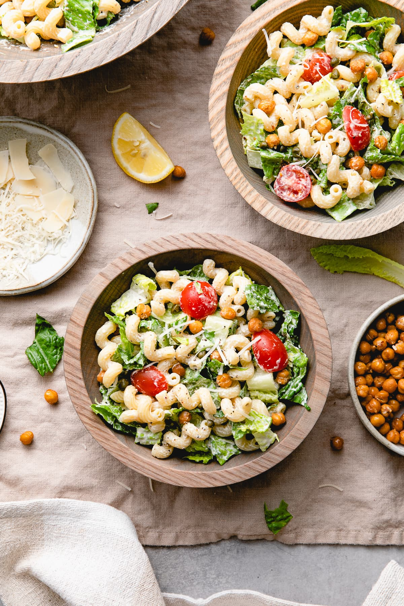

Caesar Pasta Salad

Caesar Pasta Salad is a delicious quick and easy salad perfect as an everyday side salad or main entree! It can be made ahead and stores well. Vegan, oil-free, WFPB recipe.
Ingredients
- 8 oz. pasta (rotini, fusilli, elbow, farfalle, ect.)
- 2 large heads of romaine, chopped
- 1 cup cherry tomatoes, sliced in half
- 1 or 2 tablespoons capers, optional
- 1/2 cup Vegan Caesar Dressing
- Salt + pepper, to taste
Instructions
- Pasta: Cook the pasta according to package directions for al dente. Rinse the pasta under cool running water until cooled.
- Prep: Ideally you will have the caesar dressing and chickpeas already prepared, so all you need to do is chop the romaine and slice the tomatoes.
- Assemble the salad: In a large serving bowl (or pot the pasta was cooked in) add the pasta, romaine, capers, and tomatoes. Pour the caesar dressing over top and toss to combine. Season with salt and pepper to taste.
- Serve: Serve in individual bowls topped with Crispy Chickpeas, vegan parm, and any other optional toppings.
Index